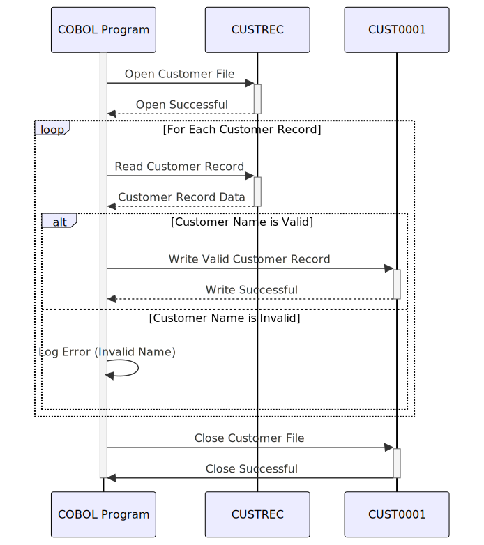

Gerado em: 1 de outubro de 2024
Título do Documento: CardDemo - Validação e Processamento de Dados do Cliente
Descrição Resumida:
Este programa valida os dados do cliente de um arquivo de entrada (CUSTREC.cpy) e grava os registros válidos em um arquivo de saída. O processo de validação garante a integridade dos dados, verificando se os nomes dos clientes são válidos.
Histórias do Usuário: Como analista de dados, preciso ter certeza de que apenas os registros válidos de clientes sejam usados para análise, a fim de manter a precisão e a confiabilidade dos dados.
Epic Relacionado: 8 - Gestão de Dados do Cliente
Requisitos Técnicos:
CUSTREC.cpy.CUST-FIRST-NAME não está vazio e contém apenas caracteres alfabéticos.CUST-LAST-NAME não está vazio e contém apenas caracteres alfabéticos.CUST0001.Modelos Relacionados
CUST-ID Integer: Identificador exclusivo do cliente.CUST-FIRST-NAME String: Primeiro nome do cliente.CUST-MIDDLE-NAME String: Nome do meio do cliente.CUST-LAST-NAME String: Sobrenome do cliente.CUST-ADDR-LINE-1 String: Linha de endereço 1 do cliente.CUST-ADDR-LINE-2 String: Linha de endereço 2 do cliente.CUST-ADDR-LINE-3 String: Linha de endereço 3 do cliente.CUST-ADDR-STATE-CD String: Código do estado do cliente.CUST-ADDR-COUNTRY-CD String: Código do país do cliente.CUST-ADDR-ZIP String: CEP do cliente.CUST-PHONE-NUM-1 String: Número de telefone principal do cliente.CUST-PHONE-NUM-2 String: Número de telefone secundário do cliente.CUST-SSN String: Número do Seguro Social do cliente.CUST-GOVT-ISSUED-ID String: ID emitido pelo governo do cliente.CUST-DOB-YYYYMMDD Date: Data de nascimento do cliente.CUST-EFT-ACCOUNT-ID String: ID da conta de Transferência Eletrônica de Fundos do cliente.CUST-PRI-CARD-HOLDER-IND String: Indicador se o cliente é o titular principal do cartão.CUST-FICO-CREDIT-SCORE Integer: Pontuação de crédito FICO do cliente.Configurações:
INPUT-FILE-PATH: Caminho para o arquivo de dados do cliente de entrada (CUSTREC.cpy).OUTPUT-FILE-PATH: Caminho para o arquivo de saída para registros de clientes válidos (CUST0001).LOG-FILE-PATH: Caminho para o arquivo de log para registrar erros.VALID-NAME-REGEX: Padrão de expressão regular para nomes válidos (por exemplo, ^[a-zA-Z]+$).Melhorias de Código:
Melhorias de Segurança:
Diagrama Conceitual:
–Made by “Smart Engineering” (by Compass.UOL)–